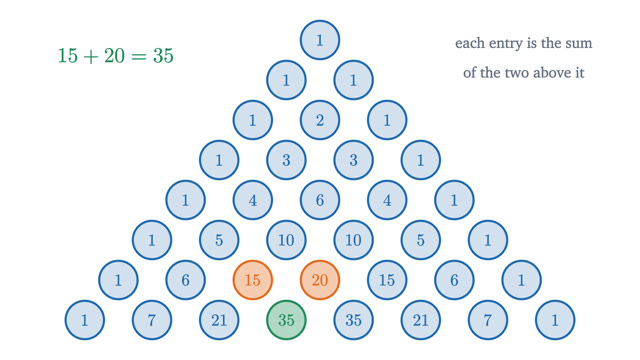
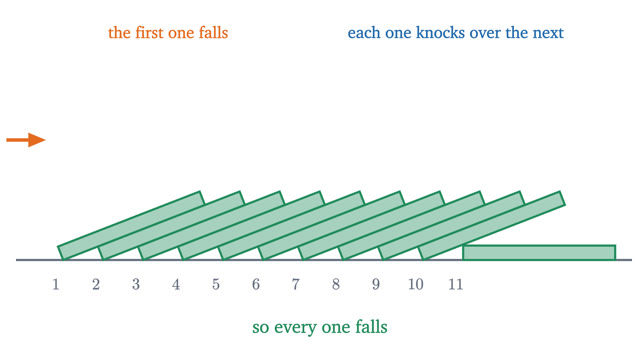
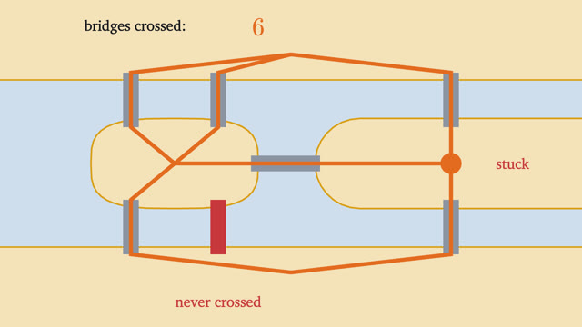
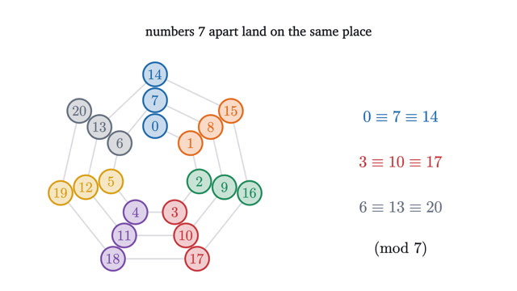
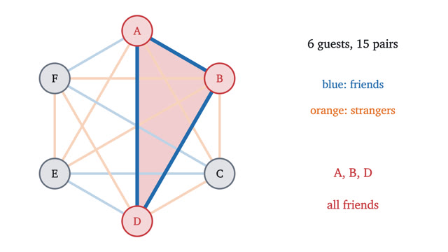

Discrete Mathematics
Counting, induction, graphs and the arguments computer science runs on.
Start with lesson 1-
1
Permutations and combinations: counting without listingFive runners and three medals give 60 podiums but only 10 groups of medalists. The product rule, permutations and combinations, each one proved.

-
2
Pascal's triangle and the binomial theoremRoutes across a street grid and the coefficients of (a + b)^n are the same numbers. We prove Pascal's rule, the binomial theorem and the row sums by counting.

-
3
The pigeonhole principle: obvious, and surprisingly strongMore objects than boxes forces two into one box. We prove the principle and its general form, then use it on problems where finding the boxes is the hard part.

-
4
Mathematical induction: infinitely many dominoesHow a finite argument proves infinitely many statements. Induction stated exactly, used on a sum and a tiling, and a famous false proof taken apart.

-
5
Bridges of Königsberg: Euler paths and circuitsSeven bridges and a walk that nobody could find. Counting the edges at each vertex proves it cannot exist and settles every draw-without-lifting puzzle.

-
6
Fibonacci numbers and thinking recursivelyCount the ways to climb a staircase and the Fibonacci numbers appear. Their rule, two identities, Binet's formula and the golden ratio, all proved.

-
7
Clock arithmetic: modular arithmetic and why it worksArithmetic with remainders, made exact. Congruences, the divisibility tests for 9 and 11, when division is allowed, and Fermat's little theorem, with proofs.

-
8
The probabilistic method: Ramsey numbers by coin flipsSix party guests always include three mutual friends or three mutual strangers. For larger parties, the best lower bounds come from coloring at random.
